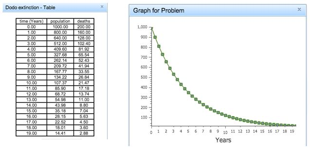

Systems Dynamics Modeling is a method of understanding systems (i.e., parts of the world that you are interested in) that change over time (i.e., they are dynamic). It works by breaking down a system into distinct pieces—called “nodes” in the Dragoon software. A model is made by defining both nodes and the relationships between them. In particular, if Node A has an effect on Node B, Node A is considered an “input” of Node B. Once all the nodes and inputs are defined, the computer can calculate the change in the system over time and provide you with graphs showing the results.
Parameters, Actuators, Functions
Models in Dragoon are made up of three types of nodes: Paramters, Accumulators, and Functions.
Parameters are the simplest type of node. A parameter represents a fixed quantity that never changes. Parameters are used to represent constant values (height of a building being 12 m.
Accumulators represent a quantity that increases or decreases over time based on its previous value and the value of its inputs. The inputs to an accumulator govern how much it changes over time. At each time step, the inputs are added or subtracted from the value for the accumulator at the current time step to determine its value at the next time step.
Functions represent a value that is directly related to the values of other quantities, without regard to its own previous value. The inputs to functions determine the value of the function. A function differs from an accumulator in that it does not need to know its previous value in order to determine its next value.
Accumulators and functions seem very similar at first, and it can take some practice to determine if a particular quantity should be represented as one or the other. To determine if a quantity should be an accumulator, ask the question: “Does this quantity add or subtract new values to itself each time step to find its new value?” If it does, then the quantity is an Accumulator. If it does not, then the quantity is a Function. Additionally, Accumulators typically have an initial value associated with them, whereas functions do not.
Example system: Let’s start by modeling a simple system: a population of Dodo birds as they were becoming extinct. Suppose that there were 1000 Dodo birds in the population initially and that 20% of the Dodo birds died each year. Thus, the number of deaths in the first year was 1000 * 20% = 200 deaths, leaving 800 Dodos alive at the beginning of the second year. The number of deaths in the second year was 800 * 20% = 160 deaths, leaving 640 Dodos alive for the start of the third year. Because the number of Dodo birds and the number of deaths change over the years, this is a dynamic system.
Question 1
To make sure you understand the system's behavior, please fill in the next few years in the table below.
1a.
Dodo population at the start of the year
Deaths during the year
Year 0 (starting values)
1000
200
Year 1
800
160
Year 2
Year 3
Year 4
It would be tedious to continue calculating this by hand, so let us build a model to represent this dynamic system of a shrinking Dodo population. Let’s start by defining our nodes, of which there are 3:
Death Rate is the percentage of the Dodo population that dies each year. This is given to us as a constant value of 20% each year, so it is a Parameter. Because Dragoon doesn’t understand percentages, the value of death rate is 0.2.
Populationrepresents the number of Dodos still alive. We are given an initial value for this quantity – 1000 Dodos – and the number of Dodos alive at the end of each year is dependent on the number alive in the previous year (new population = old population – deaths). Thus we know the population node is an Accumulator.
Deaths represents the number of Dodos that die in a given year. This is a quantity that is completely determined by the value of two other inputs (population * death rate). Note that the number of deaths each year does not require knowledge of the deaths of the previous year to compute; this means the deaths node is a Function.
Please open the “Dodo extinction” model in the “Introductory” category of the Dragoon software. It should look similar to this (the position of the nodes does not matter):
Your Dragoon problem is incomplete! Please make sure your nodes are finished (i.e. have solid borders) and that you can view the model's graph and table of values.
It would be tedious to continue calculating this by hand, so let us build a model to represent this dynamic system of a shrinking Dodo population. Let’s start by defining our nodes, of which there are 3:
Death Rate is the percentage of the Dodo population that dies each year. This is given to us as a constant value of 20% each year, so it is a Parameter. Because Dragoon doesn’t understand percentages, the value of death rate is 0.2.
Populationrepresents the number of Dodos still alive. We are given an initial value for this quantity – 1000 Dodos – and the number of Dodos alive at the end of each year is dependent on the number alive in the previous year (new population = old population – deaths). Thus we know the population node is an Accumulator.
Deaths represents the number of Dodos that die in a given year. This is a quantity that is completely determined by the value of two other inputs (population * death rate). Note that the number of deaths each year does not require knowledge of the deaths of the previous year to compute; this means the deaths node is a Function.
Please open the “Dodo extinction” model in the “Introductory” category of the Dragoon software. It should look similar to this (the position of the nodes does not matter):
This model has the Parameter, Accumulator, and Function nodes discussed above. Different types of nodes have different shapes e.g., Parameter nodes are diamonds. The inside of a Parameter node shows its value. The inside of a Function node shows the mathematical operation that combines its input. The inside of an Accumulator node shows both its mathematical operation and its initial value.
If you click on the Table button, you can see the software calculates the declining population identically to your work by hand (see left figure, below); the Graph button displays the same information in graph form (see right figure).

While the Dodos extinction system is simple, other systems may be much more complex. Their predictions would be exceptionally difficult to compute by hand, but by constructing a Dragoon model, we can have Dragoon calculate the predictions which makes it much easier to understand the system.
Problem Worksheet
In these problems, we will be modeling the population of moose and wolves that lived on the Isle Royale. Wolves preyed on the moose, so their populations were tied together in what is known as a “predator-prey” relationship—as the number of moose grew, the number of wolves grew in response to having more food available, but then the wolves would eat more moose, causing the moose population to decrease, meaning less food is available for wolves, etc. This relationship is complicated, so creating a model is necessary for fully understanding the relationship between the two populations. Let us build up to the final model by making a series of models of simpler systems. For instance, the first few systems pretend that Isle Royale has only moose on it and no wolves on it.
Question 2
Assume that the moose population on the Isle Royale begins at 20 moose and that 2 moose are born each year. In the table below, identify what types of nodes would represent this information.
2a.
Quantity
Node Type
moose population
number of moose births per year
Now select the Isle Royale problem category and solve the “Moose Population 1” problem in Dragoon by creating a model. When you have finished, click on the Graph and/or Table button to confirm that the changing values of the variables make sense. Now click here (button) and it will open the Dragoon problem.
Your Dragoon problem is incomplete! Please make sure your nodes are finished (i.e. have solid borders) and that you can view the model's graph and table of values.
Question 3
Now let’s assume the moose population on the Isle Royale begins at 20 moose and the population grows by 20% each year. For example, in the first year there are 4 moose births (20 moose population * 0.20 birth rate = 4 moose), so the population at the end of the first year is 24 (20 moose population + 4 moose births). In the table below, please select a type for each quantity/node.
3a.
Quantity
Node Type
moose population
number of moose births per year
moose birth rate
Which node(s) do moose population use as inputs to determine its value?
Which node(s) do number of births per year use as inputs to determine its value?
Now please solve the "Moose population 2" problem in Dragoon.
Your Dragoon problem is incomplete! Please make sure your nodes are finished (i.e. have solid borders) and that you can view the model's graph and table of values.
Question 4
Now we will add a simple death rate to the previous model. Assume that 5% of the moose die each year. The number of moose deaths each year is calculated similar to the number of moose births each year:
moose deaths = moose population * moose death rate.
Solve the “Moose population 3” problem in Dragoon. A model similar to the one you created for “Moose population 2” is provided; you will need to modify it.
Your Dragoon problem is incomplete! Please make sure your nodes are finished (i.e. have solid borders) and that you can view the model's graph and table of values.
Question 5
: We can see from “Moose population 3” that having a simple death rate still doesn’t simulate a real population—the population still grows infinitely, when in reality there would be some limit to the number of moose the island could sustain. In this problem, we will change the moose death rate node so that it represents this relationship:
moose death rate = moose birth rate * (moose population / carrying capacity)
If there were no wolves on Isle Royale, this equation would represent that the moose population is limited by the amount of moose food growing on the island. Carrying capacity, or the number of moose the island can support, is a Parameter node with a value of 500; when the moose population reaches 500, the death rate will equal the birth rate, and the moose population growth will stagnate.
5a.
The new death rate node is a
.
Solve the “Moose population 4” problem in Dragoon. A model for “Moose population 3” is provided. You will need to modify it.
Your Dragoon problem is incomplete! Please make sure your nodes are finished (i.e. have solid borders) and that you can view the model's graph and table of values.
Question 6
Now let’s ignore the moose and pretend that Isle Royale has only wolves on it. This model should look similar to the model you made for the moose population in “Moose population 3.” Assume that the initial wolf population is 2, the birth rate is 75%, and the death rate is 67%. Solve problem “Wolves” in Dragoon.
Your Dragoon problem is incomplete! Please make sure your nodes are finished (i.e. have solid borders) and that you can view the model's graph and table of values.
Question 7
Our final step is to build a model of both the wolf and moose populations and establish a predator-prey relationship between their birth and death rates. Our new model will show a relationship between the number of wolves and the death rate of moose, as well as a relationship between the number of moose and the birth rate of the wolf population. Here are our assumptions about the populations and their relationships:
The moose population is 500 moose in the first year.
The moose birth rate is 10%
The moose births each year is moose population * moose birth rate.
The moose deaths each year is moose population * moose death rate.
The moose death rate is wolf population * the effect of wolves on moose.
The effect of wolves on moose is .003.
The wolf population is 20 wolves in the first year.
The wolf death rate is 25%
The wolf deaths each year is wolf population * wolf death rate
The wolf births each year is wolf population * wolf birth rate.
The wolf birth rate is moose population * the effect of moose on the wolves.
The effect of moose on wolves is 0.00075
Solve the “Moose and Wolves” problem in Dragoon. Note that copies of the solutions to “Moose population 3” and “Wolves” have been provided. You will need to modify them.
Your Dragoon problem is incomplete! Please make sure your nodes are finished (i.e. have solid borders) and that you can view the model's graph and table of values.